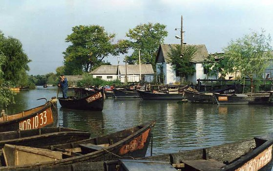
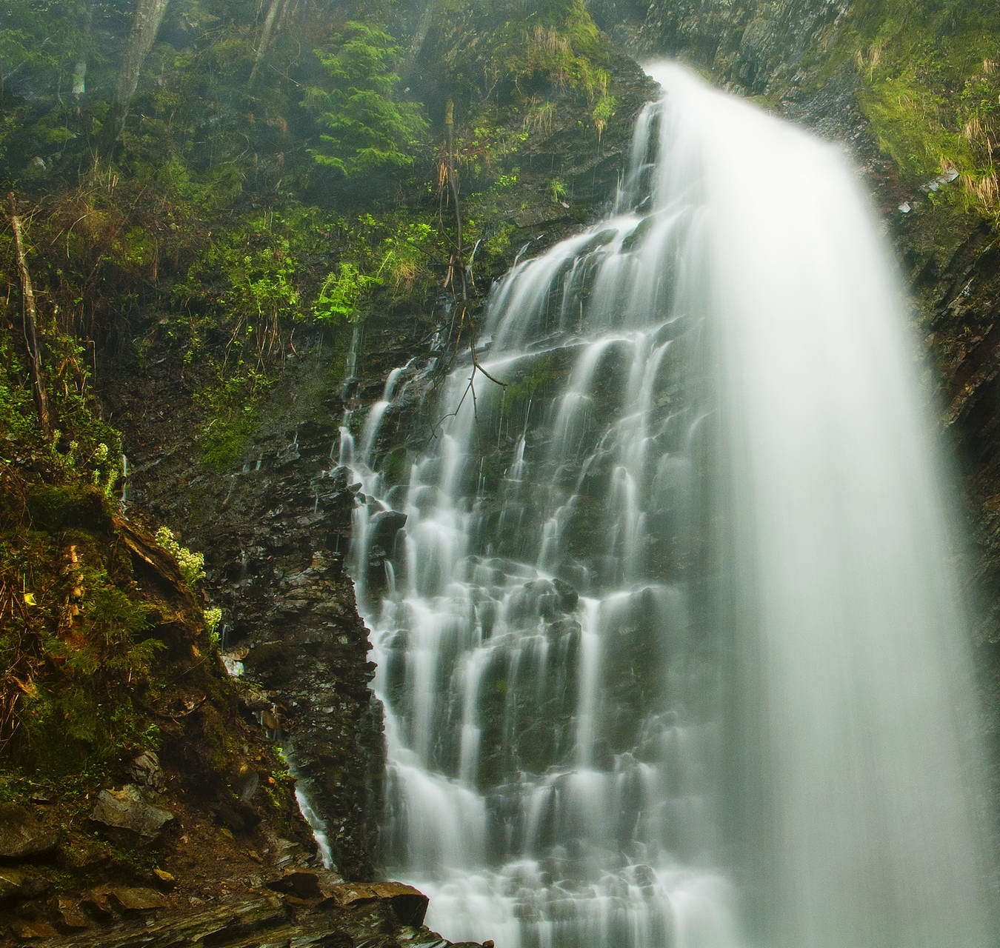
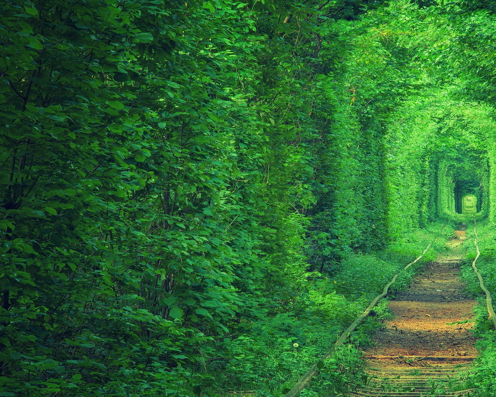
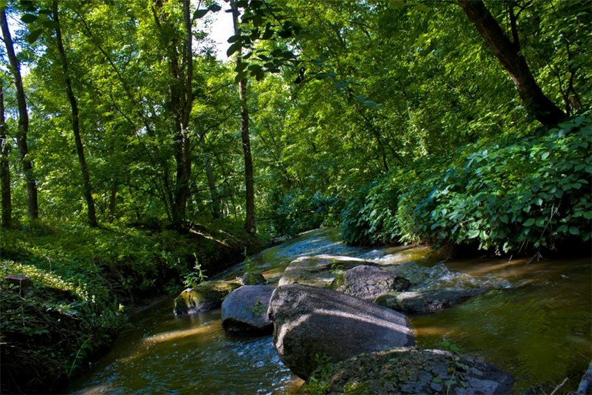

7 ДИВОВИЖНИХ МІСЦЬ УКРАЇНИ
POSTED ON 21 БЕРЕЗНЯ, 2019 BY СВІТЛАНА БОНДАРЕНКО

Краса, як відомо, і рятує життя і править світом. Краса природи – це дар Всесвіту, яким можна і потрібно насолоджуватися. Куди поїхати за величезним потоком натхнення і сил? Де побачити справжню казку і відчути нескінченне щастя?
Україна сповнена таїн і несподіванок! Пропонуємо підбірку неймовірно красивих місць нашої країни.
- Актівський каньйон
- Українське мертве море
- Вилкове
- Дендропарк Олександрія
- Водоспад Гук
- Загадковий тунель любові
- Трикратський ліс
Актівський каньйон

Фото khers-on.com
Каньйон знаходиться в Миколаївській області на річці Мертвовод.
Чому варто відвідати це місце?
Площа території складає 250 гектарів, а глибина 40-50 метрів, тому робити тут можна в прямому сенсі що завгодно.
Потрібно відзначити, що Актівський каньйон – це унікальний симбіоз водної та лісової екосистем, які в сумі дають чисте повітря і мрійливий настрій.
Ансамбль скель і гранітних валунів, які розташовані на території каньйону – унікальне місце у всій Європі. Це неймовірно красиво!
Українське мертве море
Фото dnepr.com
В Україні є власне мертве море, розташоване поблизу Херсона. Там його називають лемурійське, адже вода в цьому озері забарвлена в рожевий колір.
Та на цьому дива не закінчуються, адже ця вода вважається лікувальною і омолоджуючою.
Найцікавіше те, що в нашому Лемурійському озері на 5% більше солі, ніж в мертвому морі!
Вилкове
Фото ridna.ua
Вилково розташувався на воді, як справжня Венеція! За чудесами однозначно потрібно їхати сюди.
Крім того, тут зливаються воєдино Дунай і Чорне море – видовище від якого неможливо відірватися.
Це місце чуло тисячі зізнань у коханні 🙂 Місто – мрія.
Дендропарк Олександрія

Фото destinations.com.ua
Дендропарк Олександрія знаходиться в двох годинах від Києва – Білій Церкві.
Парк заснувано за 11 років до народження Пушкіна – в далекому 1788. До речі, парк, знаменитий поет відвідував декілька разів! Можливо, так і з’явився «Євгеній Онєгін».
У дендропарку знаходяться понад 5 тисяч старовинних і рідкісних рослин. Тут також є фонтани і водоспади, монументи і барельєфи, які створюють цілий комплекс естетичних картинок.
Водоспад Гук
Фото karpaty.love
Водоспад Гук – найбільший водоспад в Карпатах, його ще називають Женецький.
Висота Гука становить 15 метрів, що особливо помітно в літній час. Влітку в водоспаді можна купатися, оглядати околиці з оглядового майданчика і підніматися прямо до його підніжжя.
Взимку тут теж є чим зайнятися: крижані каскади, утворені в результаті падіння води, переносять зі світу реального в задзеркаллі.
Загадковий тунель любові
Фото k1.ua
Українська Волинь сповнена загадками не менше, ніж Карпати. У Клевані розташувався таємничий тунель кохання, де щороку беруть шлюб люблячі серця.
Відзначимо, серед молодят популярна традиція – садити тут саджанці дерев або квіти, що символізують їх почуття. Це романтичне місце ботаніки називають феноменом, адже знаходиться тунель вздовж залізничної колії.
Трикратський ліс
Фото han-tengry.mk.ua
Садиба Скаржинського – це історичне місце, яке варто відвідати любителям архітектури хоча б один раз. Маєток знаходиться в Миколаївській області в селі Трикрати.
Головна місцева визначна пам’ятка – Трикратський ліс.
Він представляє хитромудрий лабіринт на околиці села. Увагу туристів завжди привертає дуб любові – величезна рослина, схоже на серце, навколо якого в’ються багато історій і пліток. Подорожувати Україною – незабутньо і чудово, обов’язково робіть це частіше 🙂